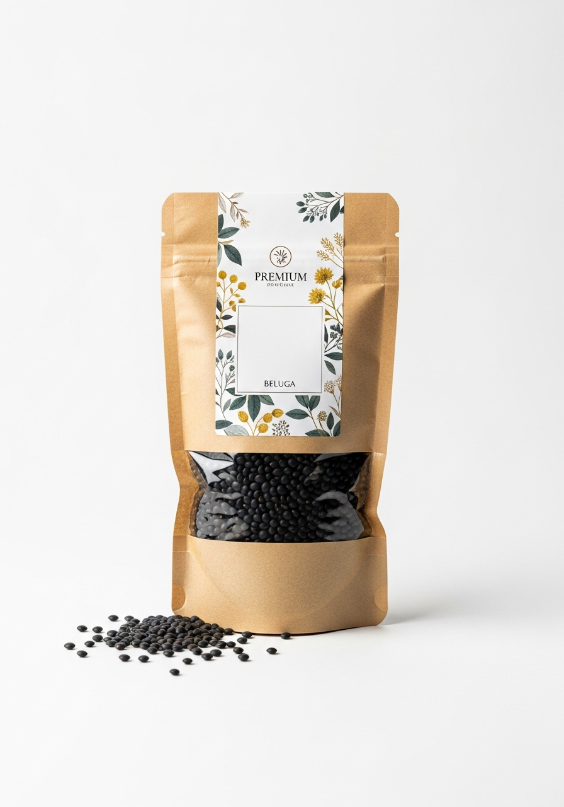

Lenteja Beluga
Selección
📦 Envase · 500 g
La más elegante de nuestra gama. Pequeñas y negras como el caviar, las lentejas beluga mantienen su forma perfecta tras la cocción. Ricas en antioxidantes y con un sabor suave y terroso. Ideales para ensaladas gourmet, guarniciones de carne y platos de cocina de autor.
¿Para qué se usa?
Características & Beneficios
Datos del producto
Por qué elegirla
Mantiene la forma perfecta
No se abre ni se rompe durante la cocción. Presentación impecable en frío y en caliente.
Antioxidantes naturales
El color negro proviene de las antocianinas, pigmentos con alto poder antioxidante.
Sin remojo previo
Lista en 20 minutos directa al fuego. La legumbre premium más rápida de preparar.
Sin conservantes
Solo lenteja beluga seleccionada. Sin aditivos, sin colorantes artificiales.
Ficha técnica
| Peso neto | 500 g |
| Variedad | Beluga negra |
| Origen | Selección Premium |
| Remojo | No necesario |
| Tiempo de cocción | 20 minutos |
| Categoría | Selección Premium |
| Formato de venta | Bolsa kraft con ventana y cierre zip |
| Conservación | Lugar fresco y seco, alejado de la luz directa |
| Sin | Conservantes · Colorantes · Gluten |


¿Interesado en distribuir este producto?
Contacta con nuestro equipo para solicitar información sobre precios, formatos y condiciones de distribución.